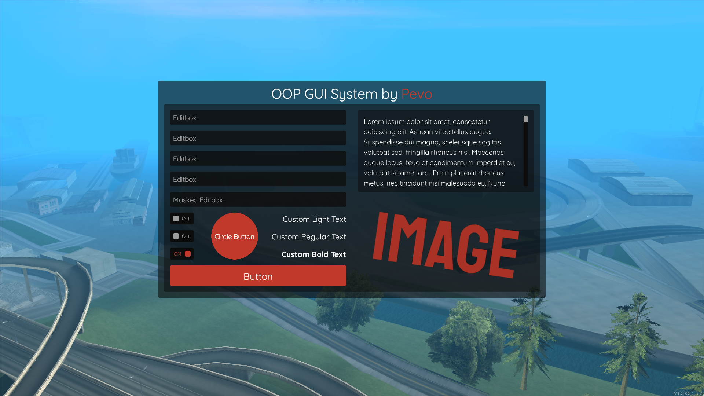

OOP GUI by Pevo is lightweight GUI system for MTA with many useful functions. You can make modern graphical interface without great knowledge of dxDraw functions. OOP GUI system is using only dxDraw functions and that makes it very lightweight and optimal. With OOP GUI you can create custom rounded rectangles, editboxes, checkboxes, buttons and more.
